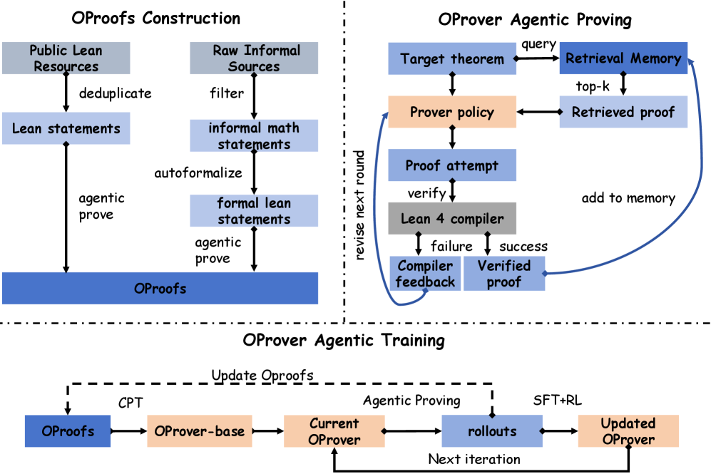
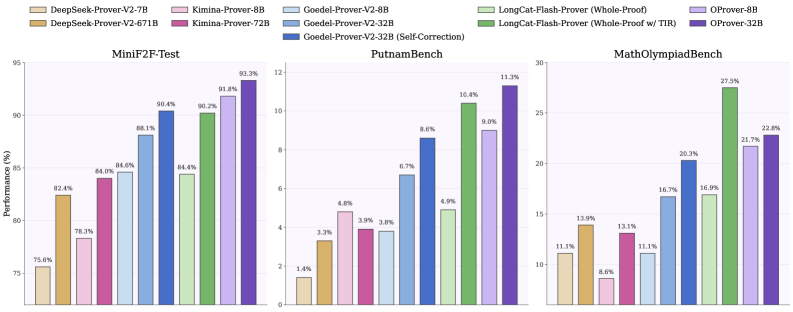

Presents OProver, an agentic framework training and proving formal theorems in Lean 4 with compiler feedback.
Abstract
Recent progress in formal theorem proving has benefited from large-scale proof generation and verifier-aware training, but agentic proving is rarely integrated into prover training, appearing only at inference time. We present OProver, a unified framework for agentic formal theorem proving in Lean 4, in which failed proof attempts are iteratively revised using retrieved compiler verified proofs and Lean compiler feedback. OProver is trained through continued pretraining followed by iterative post-training: each iteration runs agentic proving, indexes newly verified proofs into OProofs and the retrieval memory, uses repair trajectories as SFT data, and uses unresolved hard cases for RL. OProofs is built from public Lean resources, large-scale proof synthesis, and agentic proving traces, containing 1.77M Lean statements, 6.86M compiler-verified proofs, and serialized trajectories with retrieved context, failed attempts, feedback, and repairs. Across five benchmarks, OProver-32B attains the best Pass@32 on MiniF2F (93.3%), ProverBench (58.2%), and PutnamBench (11.3%), and ranks second on MathOlympiad (22.8%) and ProofNet (33.2%) more top placements than any prior open-weight whole-proof prover.
Problem
Agentic proving capabilities (retrieval, compiler feedback, iterative repair) are typically applied only at inference time in formal theorem provers, creating a train-inference mismatch. Existing corpora also lack the multi-round interaction histories needed to learn self-correction policies.
Approach
OProver formulates Lean 4 theorem proving as a bounded multi-round refinement process where a policy revises failed proof attempts using retrieved compiler-verified proofs and Lean 4 compiler feedback. The framework is trained through continued pretraining on OProofs (1.77M Lean statements, 6.86M compiler-verified proofs, and serialized agentic trajectories), followed by iterative post-training with SFT on round-level repair examples and RL on unresolved hard cases. Verified proofs from each iteration are folded back into the corpus and retrieval memory.

Figure 2 : Overview of OProver. The framework has three components: OProofs Construction (top-left), which builds a Lean-specific corpus from public Lean resources and autoformalized statements; OProver Agentic Proving (top-right), which performs multi-round refinement under retrieval and Lean 4 compiler feedback; and OProver Agentic Training (bottom), where a one-time CPT yields OProver-Base, fol
Results
OProver-32B achieves the best Pass@32 among open-weight whole-proof provers on MiniF2F (93.3%), ProverBench (58.2%), and PutnamBench (11.3%), and ranks second on MathOlympiad (22.8%) and ProofNet (33.2%), achieving more top placements than any prior open-weight system.

Figure 1 : Pass@32 performance on MiniF2F-Test, PutnamBench, and MathOlympiadBench. OProver consistently outperforms prior open-source whole-proof provers across all three benchmarks; the only exception is LongCat-Flash-Prover with TIR on MathOlympiadBench.